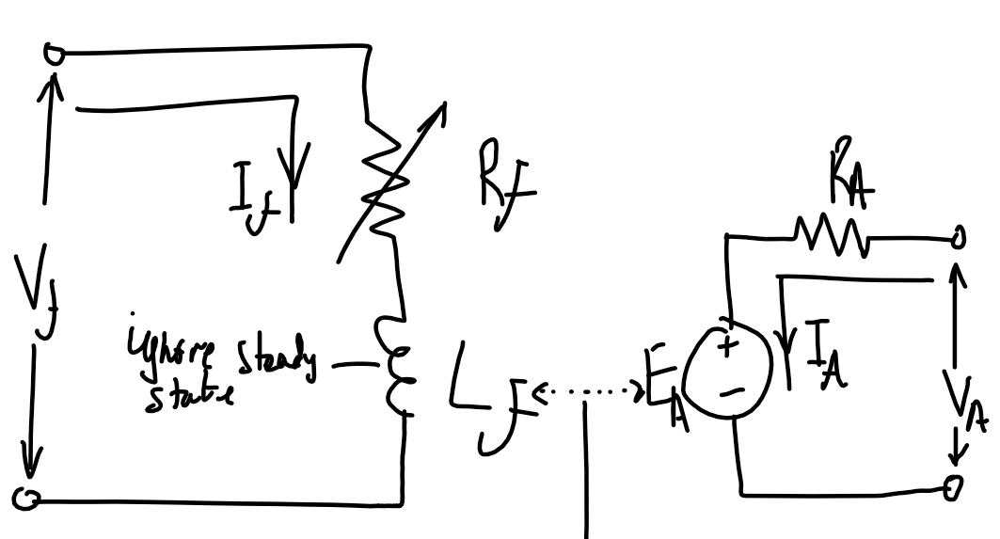
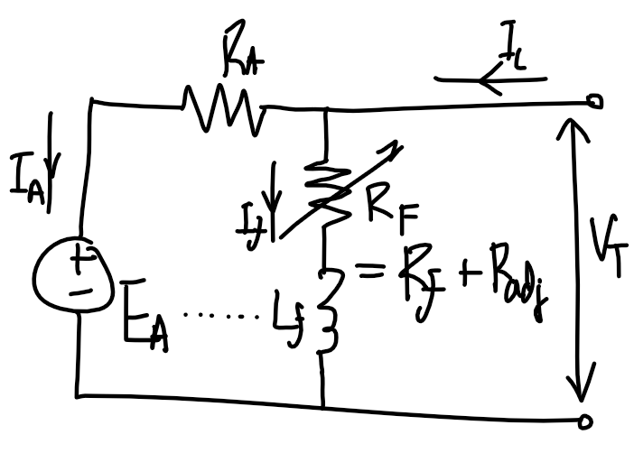

Double check all are in the correct phase! Multiplications and divisions by 3 or 3 where necessary must be checked! Try annotating everything that does not have an associated phase.
Check conjugate in current. Sˉ=VˉIˉ∗
Check transformer parameters are referred to the proper side
Y-Δ transformation (Balanced case)
ZΔ=3ZY
Types of power factors (From ENSC2003)
Where Sˉ=∣Sˉ∣∠φ:
φ=arctan(PQ)=θv−θi
Lagging
Leading
Unity
Voltage
Current behind
Current ahead
In phase
Load type
Inductive
Capacitive
Resistive
Q
Q>0
Q<0
Q=0
φ
φ>0°
φ<0°
φ=0°
PF [Load]
[0,1)
[0,1)
1
PF [Source]
[0,−1)
[0,−1)
−1
Power types in induction motor
Type
Description
Equivalent terms
Input power
Power into machine. VT=V3ϕ, IL=I3ϕ
Pin, 3VTILcos(θ)
Output power
Mechanical output power of the machine, excludes losses
Pout, Pload
Converted power
Total electrical power converted to mechanical power, includes useful power and mechanical losses inside machine
Ignore shunt resistance. Refer from primary side. Use KVL to determine Vin.
Voltage regulation is typically small.
∣Vin∣=∣Vrated,P+IL,P⋅Zˉ∣
DC machine
Separately excited machine
Shunt excited
Series excited


Similar torque-speed characteristic to separately-excited machine
High torque per ampere. Used in high-torque applications
Requires two independent voltage sources
Do not run unloaded - infinite speed at 0 torque as ω∝1/τ
Motor control using Rf
Motor control using RF
Motor control using VT.
Starting DC motors
RA might need to be adjusted so it is high initially in large DC motors, as the starting current is high since there is no back-emf created by EA.
Magnetizating curve
When a question specifies the field current or Radj, refer to magnetization curve. Magnetizating curve is valid at a specific speed nm1, and the curve is used to find EA1. Using the load condition to find the armature current IA=τind/(KΦ), VA can be used to find a second induced EMF EA2. Using EA2 find the speed nm2 by scaling nm1 by EA2/EA1.
Idk
Pmech=EAIA
No-load separately excited machine. Assuming no mechanical losses.
EA=VA (No load)
IA=0 (No load)
Armature reaction causes increase in speed and causes instability as the core saturates near the poles. Can be reduced with compensating winding which is in series with the armature coil.
KΦω=EA
KΦIA=τ
For shunt motor
KΦ=ωVT−RAIA
τ=KΦIA=ωVT−RAIAIA
Assume no saturation, speed locked(?):
This doesn't seem right. We are meant to use the machine constant and the proportionality of current to magnetic flux.